12.5 Irrational and Transcendental Functions
Common Lisp provides no data type that can accurately represent irrational
numerical values. The functions in this section are described as if the results were
mathematically accurate, but actually they all produce floating-point
approximations to the true mathematical result in the general case. In some places
mathematical identities are set forth that are intended to elucidate the meanings
of the functions; however, two mathematically identical expressions may be
computationally different because of errors inherent in the floating-point
approximation process.
When the arguments to a function in this section are all rational and the true
mathematical result is also (mathematically) rational, then unless otherwise
noted an implementation is free to return either an accurate result of
type rational or a single-precision floating-point approximation. If the
arguments are all rational but the result cannot be expressed as a rational
number, then a single-precision floating-point approximation is always
returned.
X3J13 voted in March 1989 to clarify that the provisions of the previous
paragraph apply to complex numbers. If the arguments to a function are all of
type (or rational (complex rational)) and the true mathematical result is
(mathematically) a complex number with rational real and imaginary parts,
then unless otherwise noted an implementation is free to return either an
accurate result of type (or rational (complex rational)) or a single-precision
floating-point approximation of type single-float (permissible only if the imaginary
part of the true mathematical result is zero) or (complex single-float). If
the arguments are all of type (or rational (complex rational)) but the
result cannot be expressed as a rational or complex rational number,
then the returned value will be of type single-float (permissible only if
the imaginary part of the true mathematical result is zero) or (complex
single-float).
The rules of floating-point contagion and complex contagion are effectively
obeyed by all the functions in this section except expt, which treats some
cases of rational exponents specially. When, possibly after contagious
conversion, all of the arguments are of the same floating-point or complex
floating-point type, then the result will be of that same type unless otherwise
noted.
Implementation note: There is a “floating-point cookbook” by Cody and Waite
[14] that may be a useful aid in implementing the functions defined in this
section.
12.5.1 Exponential and Logarithmic Functions
Along with the usual one-argument and two-argument exponential and logarithm
functions, sqrt is considered to be an exponential function, because it raises a
number to the power 1/2.
[Function] exp number
Returns e raised to the power number, where e is the base of the natural
logarithms.
[Function] expt base-number power-number
Returns base-number raised to the power power-number. If the base-number is of
type rational and the power-number is an integer, the calculation will be exact
and the result will be of type rational; otherwise a floating-point approximation
may result.
X3J13 voted in March 1989 to clarify that provisions similar to those of the
previous paragraph apply to complex numbers. If the base-number is of type
(complex rational) and the power-number is an integer, the calculation will also
be exact and the result will be of type (or rational (complex rational));
otherwise a floating-point or complex floating-point approximation may
result.
When power-number is 0 (a zero of type integer), then the result is always the
value 1 in the type of base-number, even if the base-number is zero (of any type).
That is:
| (expt x 0) ≡ (coerce 1 (type-of x))
|
If the power-number is a zero of any other data type, then the result is also the value
1, in the type of the arguments after the application of the contagion rules, with
one exception: it is an error if base-number is zero when the power-number is a
zero not of type integer.
Implementations of expt are permitted to use different algorithms for the
cases of a rational power-number and a floating-point power-number; the
motivation is that in many cases greater accuracy can be achieved for the
case of a rational power-number. For example, (expt pi 16) and (expt pi
16.0) may yield slightly different results if the first case is computed by
repeated squaring and the second by the use of logarithms. Similarly, an
implementation might choose to compute (expt x 3/2) as if it had been
written (sqrt (expt x 3)), perhaps producing a more accurate result than
would (expt x 1.5). It is left to the implementor to determine the best
strategies.
The result of expt can be a complex number, even when neither argument is
complex, if base-number is negative and power-number is not an integer. The
result is always the principal complex value. Note that (expt -8 1/3) is not
permitted to return -2; while -2 is indeed one of the cube roots of -8, it is not the
principal cube root, which is a complex number approximately equal to #C(1.0
1.73205).
Notice of correction. The first edition gave the incorrect value #C(0.5 1.73205)
for the principal cube root of -8. The correct value is #C(1.0 1.73205), that is,
1 + 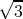i. I simply don’t know what I was thinking of!
[Function] log number &optional base
Returns the logarithm of number in the base base, which defaults to e, the base of
the natural logarithms. For example:
The result of (log 8 2) may be either 3 or 3.0, depending on the implementation.
Note that log may return a complex result when given a non-complex
argument if the argument is negative. For example:
| (log -1.0) ≡ (complex 0.0 (float pi 0.0))
|
X3J13 voted in January 1989 to specify certain floating-point behavior when
minus zero is supported. As a part of that vote it approved a mathematical
definition of complex logarithm in terms of real logarithm, absolute value, arc
tangent of two real arguments, and the phase function as
| Logarithm | log 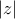 + i phase z
|
This specifies the branch cuts precisely whether minus zero is supported or not; see
phase and atan.
[Function] sqrt number
Returns the principal square root of number. If the number is not complex
but is negative, then the result will be a complex number. For example:
| (sqrt -9.0) ⇒ #c(0.0 3.0) |
The result of (sqrt 9) may be either 3 or 3.0, depending on the implementation. The
result of (sqrt -9) may be either #c(0 3) or #c(0.0 3.0).
X3J13 voted in January 1989 to specify certain floating-point behavior when
minus zero is supported. As a part of that vote it approved a mathematical
definition of complex square root in terms of complex logarithm and exponential
functions as
This specifies the branch cuts precisely whether minus zero is supported or not; see
phase and atan.
[Function] isqrt integer
Integer square root: the argument must be a non-negative integer, and the result
is the greatest integer less than or equal to the exact positive square root of the
argument. For example:
12.5.2 Trigonometric and Related Functions
Some of the functions in this section, such as abs and signum, are apparently
unrelated to trigonometric functions when considered as functions of real numbers
only. The way in which they are extended to operate on complex numbers makes
the trigonometric connection clear.
[Function] abs number
Returns the absolute value of the argument. For a non-complex number x,
| (abs x) ≡ (if (minusp x) (- x) x)
|
and the result is always of the same type as the argument.
For a complex number z, the absolute value may be computed as
| (sqrt (+ (expt (realpart z) 2) (expt (imagpart z) 2)))
|
Implementation note: The careful implementor will not use this formula directly for
all complex numbers but will instead handle very large or very small components
specially to avoid intermediate overflow or underflow.
For example:
The result of (abs #c(3 4)) may be either 5 or 5.0, depending on the implementation.
[Function] phase number
The phase of a number is the angle part of its polar representation as a complex
number. That is,
| (phase z) ≡ (atan (imagpart z) (realpart z))
|
The result is in radians, in the range −π (exclusive) to π (inclusive). The phase of a
positive non-complex number is zero; that of a negative non-complex number is π.
The phase of zero is arbitrarily defined to be zero.
X3J13 voted in January 1989 to specify certain floating-point behavior
when minus zero is supported; phase is still defined in terms of atan as
above, but thanks to a change in atan the range of phase becomes −π
inclusive to π inclusive. The value −π results from an argument whose
real part is negative and whose imaginary part is minus zero. The phase
function therefore has a branch cut along the negative real axis. The phase
of +0 + 0i is +0, of +0 − 0i is −0, of −0 + 0i is +π, and of −0 − 0i is
−π.
If the argument is a complex floating-point number, the result is a
floating-point number of the same type as the components of the argument. If the
argument is a floating-point number, the result is a floating-point number of the
same type. If the argument is a rational number or complex rational number, the
result is a single-format floating-point number.
[Function] signum number
By definition,
| (signum x) ≡ (if (zerop x) x (/ x (abs x)))
|
For a rational number, signum will return one of -1, 0, or 1 according to whether the
number is negative, zero, or positive. For a floating-point number, the result will
be a floating-point number of the same format whose value is −1, 0, or 1. For a
complex number z, (signum z) is a complex number of the same phase but with
unit magnitude, unless z is a complex zero, in which case the result is z. For
example:
| (signum #C(7.5 10.0)) ⇒ #C(0.6 0.8) |
| (signum #C(0.0 -14.7)) ⇒ #C(0.0 -1.0) |
For non-complex rational numbers, signum is a rational function, but it may be
irrational for complex arguments.
[Function] sin radians
[Function] cos radians
[Function] tan radians
sin returns the sine of the argument, cos the cosine, and tan the tangent. The
argument is in radians. The argument may be complex.
[Function] cis radians
This computes ei⋅radians. The name cis means “cos + i sin,” because
ei𝜃 = cos 𝜃 + i sin 𝜃. The argument is in radians and may be any non-complex
number. The result is a complex number whose real part is the cosine of the
argument and whose imaginary part is the sine. Put another way, the result is a
complex number whose phase is the equal to the argument (mod 2π) and whose
magnitude is unity.
Implementation note: Often it is cheaper to calculate the sine and cosine of a single
angle together than to perform two disjoint calculations.
[Function] asin number
[Function] acos number
asin returns the arc sine of the argument, and acos the arc cosine. The result is in
radians. The argument may be complex.
The arc sine and arc cosine functions may be defined mathematically for an
argument z as follows:
Note that the result of asin or acos may be complex even if the argument is not
complex; this occurs when the absolute value of the argument is greater than
1.
Kahan [25] suggests for acos the defining formula
or even the much simpler (π∕2) − arcsin z. Both equations are mathematically
equivalent to the formula shown above.
Implementation note: These formulae are mathematically correct, assuming
completely accurate computation. They may be terrible methods for floating-point
computation. Implementors should consult a good text on numerical analysis. The
formulae given above are not necessarily the simplest ones for real-valued computations,
either; they are chosen to define the branch cuts in desirable ways for the complex
case.
[Function] atan y &optional x
An arc tangent is calculated and the result is returned in radians.
With two arguments y and x, neither argument may be complex. The result is
the arc tangent of the quantity y/x. The signs of y and x are used to derive
quadrant information; moreover, x may be zero provided y is not zero. The value
of atan is always between −π (exclusive) and π (inclusive). The following table
details various special cases.
| Condition | Cartesian Locus | Range of Result |
| y = 0 | x > 0 | Positive x-axis | 0 |
| y > 0 | x > 0 | Quadrant I | 0 < result < π∕2 |
| y > 0 | x = 0 | Positive y-axis | π∕2 |
| y > 0 | x < 0 | Quadrant II | π∕2 < result < π |
| y = 0 | x < 0 | Negative x-axis | π |
| y < 0 | x < 0 | Quadrant III | −π < result < −π∕2 |
| y < 0 | x = 0 | Negative y-axis | −π∕2 |
| y < 0 | x > 0 | Quadrant IV | −π∕2 < result < 0 |
| y = 0 | x = 0 | Origin | error |
|
|
|
|
| |
X3J13 voted in January 1989 to specify certain floating-point behavior when minus
zero is supported. When there is a minus zero, the preceding table must be
modified slightly:
| Condition | Cartesian Locus | Range of Result |
| y = +0 | x > 0 | Just above positive x-axis | +0 |
| y > 0 | x > 0 | Quadrant I | +0 < result < π∕2 |
| y > 0 | x = ±0 | Positive y-axis | π∕2 |
| y > 0 | x < 0 | Quadrant II | π∕2 < result < π |
| y = +0 | x < 0 | Just below negative x-axis | π |
| y = −0 | x < 0 | Just above negative x-axis | π |
| y < 0 | x < 0 | Quadrant III | −π < result < −π∕2 |
| y < 0 | x = ±0 | Negative y-axis | −π∕2 |
| y < 0 | x > 0 | Quadrant IV | −π∕2 < result < −0 |
| y = −0 | x > 0 | Just below positive x-axis | −0 |
| y = +0 | x = +0 | Near origin | +0 |
| y = −0 | x = +0 | Near origin | −0 |
| y = +0 | x = −0 | Near origin | π |
| y = −0 | x = −0 | Near origin | −π |
|
|
|
|
| |
Note that the case y = 0,x = 0 is an error in the absence of minus zero,
but the four cases y = ±0,x = ±0 are defined in the presence of minus
zero.
With only one argument y, the argument may be complex. The result is
the arc tangent of y, which may be defined by the following formula:
Implementation note: This formula is mathematically correct, assuming completely
accurate computation. It may be a terrible method for floating-point computation.
Implementors should consult a good text on numerical analysis. The formula
given above is not necessarily the simplest one for real-valued computations,
either; it is chosen to define the branch cuts in desirable ways for the complex
case.
X3J13 voted in January 1989 to replace the preceding formula with the
formula
| Arc tangent | log(1 + iy) − log(1 −iy)
2i |
This change alters the direction of continuity for the branch cuts, which
alters the result returned by atan only for arguments on the imaginary
axis that are of magnitude greater than 1. See section 12.5.3 for further
details.
For a non-complex argument y, the result is non-complex and lies between
−π∕2 and π∕2 (both exclusive).
Compatibility note: MacLisp has a function called atan whose range is from 0 to 2π.
Almost every other programming language (ANSI Fortran, IBM PL/1, Interlisp) has a
two-argument arc tangent function with range −π to π. Lisp Machine Lisp provides two
two-argument arc tangent functions, atan (compatible with MacLisp) and atan2
(compatible with all others).
Common Lisp makes two-argument atan the standard one with range −π to π.
Observe that this makes the one-argument and two-argument versions of atan
compatible in the sense that the branch cuts do not fall in different places. The Interlisp
one-argument function arctan has a range from 0 to π, while nearly every other
programming language provides the range −π∕2 to π∕2 for one-argument arc tangent!
Nevertheless, since Interlisp uses the standard two-argument version of arc tangent, its
branch cuts are inconsistent anyway.
[Constant] pi
This global variable has as its value the best possible approximation to π in long
floating-point format. For example:
| (defun sind (x) ;The argument is in degrees
|
| (sin (* x (/ (float pi x) 180)))) |
An approximation to π in some other precision can be obtained by writing (float pi
x), where x is a floating-point number of the desired precision, or by
writing (coerce pi type), where type is the name of the desired type, such as
short-float.
[Function] sinh number
[Function] cosh number
[Function] tanh number
[Function] asinh number
[Function] acosh number
[Function] atanh number
These functions compute the hyperbolic sine, cosine, tangent, arc sine, arc cosine,
and arc tangent functions, which are mathematically defined for an argument
z as
follows:
| Hyperbolic sine | (ez −e−z)∕2
|
| Hyperbolic cosine | (ez + e−z)∕2 |
| Hyperbolic tangent | (ez −e−z)∕(ez + e−z) |
| Hyperbolic arc sine | log 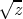
|
| Hyperbolic arc cosine | log 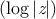
|
| Hyperbolic arc tangent | log 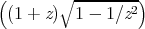 | WRONG!
|
WARNING! The formula shown above for hyperbolic arc tangent is
incorrect. It is not a matter of incorrect branch cuts; it simply does not
compute anything like a hyperbolic arc tangent. This unfortunate error in the
first edition was the result of mistranscribing a (correct) APL formula
from Penfield’s paper [36]. The formula should have been transcribed as
| Hyperbolic arc tangent | log 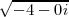
|
A proposal was submitted to X3J13 in September 1989 to replace the formulae for
acosh and atanh. See section 12.5.3 for further discussion.
Note that the result of acosh may be complex even if the argument is not
complex; this occurs when the argument is less than 1. Also, the result of atanh
may be complex even if the argument is not complex; this occurs when the
absolute value of the argument is greater than 1.
Implementation note: These formulae are mathematically correct, assuming
completely accurate computation. They may be terrible methods for floating-point
computation. Implementors should consult a good text on numerical analysis. The
formulae given above are not necessarily the simplest ones for real-valued computations,
either; they are chosen to define the branch cuts in desirable ways for the complex
case.
12.5.3 Branch Cuts, Principal Values, and Boundary Conditions in the
Complex Plane
Many of the irrational and transcendental functions are multiply defined in the
complex domain; for example, there are in general an infinite number of complex
values for the logarithm function. In each such case, a principal value must
be chosen for the function to return. In general, such values cannot be
chosen so as to make the range continuous; lines in the domain called
branch cuts must be defined, which in turn define the discontinuities in the
range.
Common Lisp defines the branch cuts, principal values, and boundary
conditions for the complex functions following a proposal for complex functions in
APL [36]. The contents of this section are borrowed largely from that
proposal.
Compatibility note: The branch cuts defined here differ in a few very minor respects
from those advanced by W. Kahan, who considers not only the “usual” definitions but
also the special modifications necessary for IEEE proposed floating-point arithmetic,
which has infinities and minus zero as explicit computational objects. For example, he
proposes that = 2i, but = −2i.
It may be that the differences between the APL proposal and Kahan’s proposal will
be ironed out. If so, Common Lisp may be changed as necessary to be compatible with
these other groups. Any changes from the specification below are likely to be quite
minor, probably concerning primarily questions of which side of a branch cut is
continuous with the cut itself.
Indeed, X3J13 voted in January 1989 to alter the direction of continuity for
the branch cuts of atan, and also to address the treatment of branch cuts in
implementations that have a distinct floating-point minus zero.
The treatment of minus zero centers in two-argument atan. If there is no
minus zero, then the branch cut runs just below the negative real axis as before,
and the range of two-argument atan is (−π,π]. If there is a minus zero, however,
then the branch cut runs precisely on the negative real axis, skittering between
pairs of numbers of the form −x ± 0i, and the range of two-argument atan is
[−π,π].
The treatment of minus zero by all other irrational and transcendental
functions is then specified by defining those functions in terms of two-argument
atan. First, phase is defined in terms of two-argument atan, and complex abs in
terms of real sqrt; then complex log is defined in terms of phase, abs, and real log;
then complex sqrt in terms of complex log; and finally all others are defined in
terms of these.
Kahan [25] treats these matters in some detail and also suggests specific
algorithms for implementing irrational and transcendental functions in IEEE
standard floating-point arithmetic [23].
Remarks in the first edition about the direction of the continuity of branch
cuts continue to hold in the absence of minus zero and may be ignored if minus
zero is supported; since all branch cuts happen to run along the principal axes,
they run between plus zero and minus zero, and so each sort of zero is associated
with the obvious quadrant.
-
sqrt
The branch cut for square root lies along the negative real axis,
continuous with quadrant II. The range consists of the right half-plane,
including the non-negative imaginary axis and excluding the negative
imaginary axis.
X3J13 voted in January 1989 to specify certain floating-point behavior when
minus zero is supported. As a part of that vote it approved a mathematical
definition of complex square root:
|  = e(log z)∕2 = e(log z)∕2
|
This defines the branch cuts precisely, whether minus zero is supported or
not.
-
phase
The branch cut for the phase function lies along the negative real axis,
continuous with quadrant II. The range consists of that portion of the real
axis between −π (exclusive) and π (inclusive).
X3J13 voted in January 1989 to specify certain floating-point behavior when
minus zero is supported. As a part of that vote it approved a mathematical
definition of phase:
where ℑz is the imaginary part of z and ℜz the real part of z. This
defines the branch cuts precisely, whether minus zero is supported or
not.
-
log
The branch cut for the logarithm function of one argument (natural
logarithm) lies along the negative real axis, continuous with quadrant II.
The domain excludes the origin. For a complex number z, log z is defined to
be
| log z = 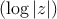 + i(phase z)
|
Therefore the range of the one-argument logarithm function is that strip of
the complex plane containing numbers with imaginary parts between −π
(exclusive) and π (inclusive).
The X3J13 vote on minus zero would alter that exclusive bound of −π to be
inclusive if minus zero is supported.
The two-argument logarithm function is defined as log bz = (log z)∕(log b).
This defines the principal values precisely. The range of the two-argument
logarithm function is the entire complex plane. It is an error if z is
zero. If z is non-zero and b is zero, the logarithm is taken to be
zero.
-
exp
The simple exponential function has no branch cut.
-
expt
The two-argument exponential function is defined as bx = ex log b. This
defines the principal values precisely. The range of the two-argument
exponential function is the entire complex plane. Regarded as a
function of x, with b fixed, there is no branch cut. Regarded as a
function of b, with x fixed, there is in general a branch cut along the
negative real axis, continuous with quadrant II. The domain excludes
the origin. By definition, 00 = 1. If b = 0 and the real part of x
is strictly positive, then bx = 0. For all other values of x, 0x is an
error.
-
asin
The following definition for arc sine determines the range and branch cuts:
This is equivalent to the formula
recommended by Kahan [25].
The branch cut for the arc sine function is in two pieces: one along
the negative real axis to the left of −1 (inclusive), continuous with
quadrant II, and one along the positive real axis to the right of 1
(inclusive), continuous with quadrant IV. The range is that strip of the
complex plane containing numbers whose real part is between −π∕2
and π∕2. A number with real part equal to −π∕2 is in the range if
and only if its imaginary part is non-negative; a number with real
part equal to π∕2 is in the range if and only if its imaginary part is
non-positive.
-
acos
The following definition for arc cosine determines the range and branch cuts:
| arccos z = −i log 
|
or, which is equivalent,
| arccos z = π
2 − arcsin z |
The branch cut for the arc cosine function is in two pieces: one along the
negative real axis to the left of −1 (inclusive), continuous with quadrant II,
and one along the positive real axis to the right of 1 (inclusive), continuous
with quadrant IV. This is the same branch cut as for arc sine. The range is
that strip of the complex plane containing numbers whose real part is
between zero and π. A number with real part equal to zero is in the range if
and only if its imaginary part is non-negative; a number with real
part equal to π is in the range if and only if its imaginary part is
non-positive.
-
atan
The following definition for (one-argument) arc tangent determines the range and branch
cuts:
Beware of simplifying this formula; “obvious” simplifications are likely to
alter the branch cuts or the values on the branch cuts incorrectly.
The branch cut for the arc tangent function is in two pieces: one along
the positive imaginary axis above i (exclusive), continuous with
quadrant II, and one along the negative imaginary axis below −i
(exclusive), continuous with quadrant IV. The points i and −i are
excluded from the domain. The range is that strip of the complex
plane containing numbers whose real part is between −π∕2 and
π∕2. A number with real part equal to −π∕2 is in the range if and
only if its imaginary part is strictly positive; a number with real
part equal to π∕2 is in the range if and only if its imaginary part
is strictly negative. Thus the range of the arc tangent function is
identical to that of the arc sine function with the points −π∕2 and π∕2
excluded.
X3J13 voted in January 1989 to replace the formula shown above with the
formula
| arctan z = log(1 + iz) − log(1 −iz)
2i |
This is equivalent to the formula
recommended by Kahan [25]. It causes the upper branch cut to be
continuous with quadrant I rather than quadrant II, and the lower branch
cut to be continuous with quadrant III rather than quadrant IV; otherwise
it agrees with the formula of the first edition. Therefore this change alters
the result returned by atan only for arguments on the positive imaginary
axis that are of magnitude greater than 1. The full description for this new
formula is as follows.
The branch cut for the arc tangent function is in two pieces: one along the
positive imaginary axis above i (exclusive), continuous with quadrant I, and
one along the negative imaginary axis below −i (exclusive), continuous with
quadrant III. The points i and −i are excluded from the domain. The range
is that strip of the complex plane containing numbers whose real
part is between −π∕2 and π∕2. A number with real part equal to
−π∕2 is in the range if and only if its imaginary part is strictly
negative; a number with real part equal to π∕2 is in the range if
and only if its imaginary part is strictly positive. Thus the range
of the arc tangent function is not identical to that of the arc sine
function.
-
asinh
The following definition for the inverse hyperbolic sine determines the range
and branch cuts:
The branch cut for the inverse hyperbolic sine function is in two pieces: one
along the positive imaginary axis above i (inclusive), continuous with
quadrant I, and one along the negative imaginary axis below −i (inclusive),
continuous with quadrant III. The range is that strip of the complex
plane containing numbers whose imaginary part is between −π∕2
and π∕2. A number with imaginary part equal to −π∕2 is in the
range if and only if its real part is non-positive; a number with
imaginary part equal to π∕2 is in the range if and only if its real part is
non-negative.
-
acosh
The following definition for the inverse hyperbolic cosine determines the
range and branch cuts:
Kahan [25] suggests the formula
pointing out that it yields the same principal value but eliminates a
gratuitous removable singularity at z = −1. A proposal was submitted to
X3J13 in September 1989 to replace the formula acosh with that
recommended by Kahan. There is a good possibility that it will be
adopted.
The branch cut for the inverse hyperbolic cosine function lies along the real
axis to the left of 1 (inclusive), extending indefinitely along the negative real
axis, continuous with quadrant II and (between 0 and 1) with quadrant I.
The range is that half-strip of the complex plane containing numbers whose
real part is non-negative and whose imaginary part is between −π
(exclusive) and π (inclusive). A number with real part zero is in
the range if its imaginary part is between zero (inclusive) and π
(inclusive).
-
atanh
The following definition for the inverse hyperbolic tangent determines the range and
branch cuts:
| arctanh z = log 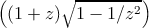 | WRONG! |
WARNING! The formula shown above for hyperbolic arc tangent is
incorrect. It is not a matter of incorrect branch cuts; it simply does not
compute anything like a hyperbolic arc tangent. This unfortunate error in
the first edition was the result of mistranscribing a (correct) APL formula
from Penfield’s paper [36]. The formula should have been transcribed as
Beware of simplifying this formula; “obvious” simplifications are likely to
alter the branch cuts or the values on the branch cuts incorrectly.
The branch cut for the inverse hyperbolic tangent function is in two pieces:
one along the negative real axis to the left of −1 (inclusive), continuous with
quadrant III, and one along the positive real axis to the right of 1
(inclusive), continuous with quadrant I. The points −1 and 1 are excluded
from the domain. The range is that strip of the complex plane containing
numbers whose imaginary part is between −π∕2 and π∕2. A number with
imaginary part equal to −π∕2 is in the range if and only if its real part is
strictly negative; a number with imaginary part equal to π∕2 is in the range
if and only if its real part is strictly positive. Thus the range of
the inverse hyperbolic tangent function is identical to that of the
inverse hyperbolic sine function with the points −πi∕2 and πi∕2
excluded.
A proposal was submitted to X3J13 in September 1989 to replace the
formula atanh with that recommended by Kahan [25]:
There is a good possibility that it will be adopted. If it is, the complete
description of the branch cuts of atanh will then be as follows.
The branch cut for the inverse hyperbolic tangent function is in two pieces:
one along the negative real axis to the left of −1 (inclusive), continuous with
quadrant II, and one along the positive real axis to the right of 1
(inclusive), continuous with quadrant IV. The points −1 and 1 are
excluded from the domain. The range is that strip of the complex
plane containing numbers whose imaginary part is between −π∕2
and π∕2. A number with imaginary part equal to −π∕2 is in the
range if and only if its real part is strictly positive; a number with
imaginary part equal to π∕2 is in the range if and only if its real
part is strictly negative. Thus the range of the inverse hyperbolic
tangent function is not the same as that of the inverse hyperbolic sine
function.
With these definitions, the following useful identities are obeyed throughout
the applicable portion of the complex domain, even on the branch cuts:
| sin iz = i sinh z | sinh iz = i sin z | arctan iz = i arctanh z |
| cos i z = cosh z | cosh i z = cos z | arcsinh i z = i arcsin z |
| tan iz = i tanh z | arcsin iz = i arcsinh z | arctanh iz = i arctan z |
I thought it would be useful to provide some graphs illustrating the behavior
of the irrational and transcendental functions in the complex plane. It also
provides an opportunity to show off the Common Lisp code that was used to
generate them.
Imagine the complex plane to be decorated as follows. The real and imaginary
axes are painted with thick lines. Parallels from the axes on both sides at
distances of 1, 2, and 3 are painted with thin lines; these parallels are doubly
infinite lines, as are the axes. Four annuli (rings) are painted in gradated shades of
gray. Ring 1, the inner ring, consists of points whose radial distances
from the origin lie in the range [1∕4, 1∕2]; ring 2 is in the radial range
[3∕4, 1]; ring 3, in the range [π∕2, 2]; and ring 4, in the range [3,π]. Ring j is
divided into 2j+1 equal sectors, with each sector painted a different shade of
gray, darkening as one proceeds counterclockwise from the positive real
axis.
We can illustrate the behavior of a numerical function f by considering how it
maps the complex plane to itself. More specifically, consider each point z of the
decorated plane. We decorate a new plane by coloring the point f(z) with the same
color that point z had in the original decorated plane. In other words, the newly
decorated plane illustrates how the f maps the axes, other horizontal and vertical
lines, and annuli.
In each figure we will show only a fragment of the complex plane, with the real
axis horizontal in the usual manner (−∞ to the left, +∞ to the right) and the
imaginary axis vertical (−∞i below, +∞i above). Each fragment shows a region
containing points whose real and imaginary parts are in the range [−4.1, 4.1]. The
axes of the new plane are shown as very thin lines, with large tick marks
at integer coordinates and somewhat smaller tick marks at multiples of
π∕2.
Figure 12.1 shows the result of plotting the identity function (quite literally);
the graph exhibits the decoration of the original plane.
Figures 12.2 through 12.20 show the graphs for the functions sqrt, exp, log,
sin, asin, cos, acos, tan, atan, sinh, asinh, cosh, acosh, tanh, and atanh, and as a
bonus, the graphs for the functions 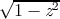, , (z − 1)∕(z + 1), and
(1 + z)∕(1 −z). All of these are related to the trigonometric functions in various
ways. For example, if f(z) = (z − 1)∕(z + 1), then tanh z = f(e2z), and if
g(z) = 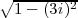, then cos z = g(sin z). It is instructive to examine the graph for
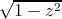 and try to visualize how it transforms the graph for sin into the graph
for cos.
Each figure is accompanied by a commentary on what maps to what and other
interesting features. None of this material is terribly new; much of it may be found
in any good textbook on complex analysis. I believe that the particular form
in which the graphs are presented is novel, as well as the fact that the
graphs have been generated as PostScript [1] code by Common Lisp code.
This PostScript code was then fed directly to the typesetting equipment
that set the pages for this book. Samples of this PostScript code follow
the figures themselves, after which the code for the entire program is
presented.
In the commentaries that accompany the figures I sometimes speak of mapping
the points ±∞ or ±∞i. When I say that function f maps +∞ to a certain point
z, I mean that
Similarly, when I say that f maps −∞i to z, I mean that
In other words, I am considering a limit as one travels out along one of the
main axes. I also speak in a similar manner of mapping to one of these
infinities.
Here is a sample of the PostScript code that generated figure 12.1, showing
the initial scaling, translation, and clipping parameters; the code for one sector of
the innermost annulus; and the code for the negative imaginary axis. Comment
lines indicate how path or boundary segments were generated separately and then
spliced (in order to allow for the places that a singularity might lurk, in which
case the generating code can “inch up” to the problematical argument
value).
The size of the entire PostScript file for the identity function was about 68
kilobytes (2757 lines, including comments). The smallest files were the plots for
atan and atanh, about 65 kilobytes apiece; the largest were the plots for sin, cos,
sinh, and cosh, about 138 kilobytes apiece.
| % PostScript file for plot of function IDENTITY |
| % Plot is to fit in a region 4.666666666666667 inches square |
| % showing axes extending 4.1 units from the origin. |
| 40.97560975609756 40.97560975609756 scale |
| % Moby grid for function IDENTITY |
| % Annulus 0.25 0.5 4 0.97 0.45 |
| % Sector from 4.7124 to 6.2832 (quadrant 3) |
| currentgray 0.45 setgray fill setgray |
[2598 lines omitted]
| % Vertical line from (0.0, -0.5) to (0.0, 0.0)
|
| 0.05 setlinewidth 1 setlinecap stroke |
| % Vertical line from (0.0, -0.5) to (0.0, -1.0) |
| 0.05 setlinewidth 1 setlinecap stroke |
| % Vertical line from (0.0, -2.0) to (0.0, -1.0) |
| 0.05 setlinewidth 1 setlinecap stroke |
| % Vertical line from (0.0, -2.0) to (0.0, -1.1579208923731617E77) |
| 0.0 -6.378103166302659 lineto |
| 0.0 -6.378103166302659 lineto |
| 0.0 -6.378103166302659 lineto |
| 0.05 setlinewidth 1 setlinecap stroke |
[84 lines omitted]
| % End of PostScript file for plot of function IDENTITY
|
Here is the program that generated the PostScript code for the graphs shown
in figures 12.1 through 12.20. It contains a mixture of fairly general mechanisms
and ad hoc kludges for plotting functions of a single complex argument while
gracefully handling extremely large and small values, branch cuts, singularities,
and periodic behavior. The aim was to provide a simple user interface that
would not require the caller to provide special advice for each function
to be plotted. The file for figure 12.1, for example, was generated by
the call (picture ’identity), which resulted in the writing of a file named
identity-plot.ps.
The program assumes that any periodic behavior will have a period that is a
multiple of 2π; that branch cuts will fall along the real or imaginary axis; and that
singularities or very large or small values will occur only at the origin, at ±1 or
±i, or on the boundaries of the annuli (particularly those with radius π∕2 or π).
The central function is parametric-path, which accepts four arguments: two real
numbers that are the endpoints of an interval of real numbers, a function that
maps this interval into a path in the complex plane, and the function to be
plotted; the task of parametric-path is to generate PostScript code (a series of
lineto operations) that will plot an approximation to the image of the
parametric path as transformed by the function to be plotted. Each of
the functions hline, vline, -hline, -vline, radial, and circumferential takes
appropriate parameters and returns a function suitable for use as the third
argument to parametric-path. There is some code that defends against
errors (by using ignore-errors) and against certain peculiarities of IEEE
floating-point arithmetic (the code that checks for not-a-number (NaN)
results).
The program is offered here without further comment or apology.
| (defparameter units-to-show 4.1) |
| (defparameter text-width-in-picas 28.0) |
| (defparameter device-pixels-per-inch 300) |
| (defparameter pixels-per-unit |
| (* (/ (/ text-width-in-picas 6) |
| (defparameter big (sqrt (sqrt most-positive-single-float))) |
| (defparameter tiny (sqrt (sqrt least-positive-single-float))) |
| (defparameter path-really-losing 1000.0) |
| (defparameter path-outer-limit (* units-to-show (sqrt 2) 1.1)) |
| (defparameter path-minimal-delta (/ 10 pixels-per-unit)) |
| (defparameter path-outer-delta (* path-outer-limit 0.3)) |
| (defparameter path-relative-closeness 0.00001) |
| (defparameter back-off-delta 0.0005) |
| (defun comment-line (stream &rest stuff)
|
| (apply #’format stream stuff) |
| (defun parametric-path (from to paramfn plotfn) |
| (assert (and (plusp from) (plusp to))) |
| (flet ((domainval (x) (funcall paramfn x)) |
| (rangeval (x) (funcall plotfn (funcall paramfn x))) |
| (/= (realpart x) (realpart x)) ;NaN? |
| (/= (imagpart x) (imagpart x)) ;NaN? |
| (> (abs (realpart x)) path-really-losing) |
| (> (abs (imagpart x)) path-really-losing)))) |
| (let ((f0 (rangeval from)) |
| (f1 (rangeval (+ from 1))) |
| (f2 (rangeval (+ from (* 2 pi)))) |
| (f3 (rangeval (+ from 1 (* 2 pi)))) |
| (f4 (rangeval (+ from (* 4 pi))))) |
| (or (< (careful-abs (- x y)) path-minimal-delta) |
| (* (+ (careful-abs x) (careful-abs y)) |
| path-relative-closeness))))) |
| (format t "~&Periodicity detected.") |
| (setq to (+ from (* (signum (- to from)) 2 pi))))))) |
| (let ((fromrange (ignore-errors (rangeval from))) |
| (torange (ignore-errors (rangeval to)))) |
| (parametric-path (back-off from to) to paramfn plotfn)) |
| (parametric-path from (back-off to from) paramfn plotfn) |
| (expand-path (refine-path (list from to) #’rangeval) |
| (defun back-off (point other)
|
| (if (or (> point 10.0) (< point 0.1)) |
| (if (or (> point sp other) (< point sp other)) |
| (+ point (* (signum (- other point)) back-off-delta)))) |
| (cond ((or (> (realpart z) big) |
| (< (imagpart z) (- big))) |
| (defparameter max-refinements 5000)
|
| (defun refine-path (original-path rangevalfn) |
| (flet ((rangeval (x) (funcall rangevalfn x))) |
| (let ((path original-path)) |
| (when (zerop (mod (+ j 1) max-refinements)) |
| (let* ((from (first path)) |
| (fromrange (rangeval from)) |
| (dist (careful-abs (- torange fromrange))) |
| (mid (* (sqrt from) (sqrt to))) |
| (midrange (rangeval mid))) |
| (cond ((or (and (far-out fromrange) (far-out torange)) |
| (and (< dist path-minimal-delta) |
| (< (abs (- midrange fromrange)) |
| ;; Next test is intentionally asymmetric to |
| ;; avoid problems with periodic functions. |
| (< (abs (- (rangeval (/ (+ to (* from 1.5)) |
| ((= mid from) (pop path)) |
| (t (setf (rest path) (cons mid (rest path))))))))) |
| (defun expand-path (path rangevalfn) |
| (flet ((rangeval (x) (funcall rangevalfn x))) |
| (let ((final-path (list (rangeval (first path))))) |
| (do ((p (rest path) (cdr p))) |
| (break "Singleton path")) |
| (let ((v (rangeval (car p)))) |
| (cond ((and (rest final-path) |
| (not (far-out (first final-path))) |
| (between v (first final-path) |
| (setf (first final-path) v)) |
| ((null (rest p)) ;Mustn’t omit last point |
| ((< (abs (- v (first final-path))) path-minimal-delta)) |
| (unless (and (far-out (first final-path)) |
| (< (abs (- v (first final-path))) |
| (push (* 1.01 path-outer-limit (signum v)) |
| (t (push v final-path)))))))) |
| (> (careful-abs x) path-outer-limit)) |
| (defparameter between-tolerance 0.000001) |
| (let ((px (realpart p)) (py (imagpart p)) |
| (qx (realpart q)) (qy (imagpart q)) |
| (rx (realpart r)) (ry (imagpart r))) |
| (and (or (<= px qx rx) (>= px qx rx)) |
| (or (<= py qy ry) (>= py qy ry)) |
| (< (abs (- (* (- qx px) (- ry qy)) |
| (* (- rx qx) (- qy py)))) |
| #’(lambda (angle) (* radius (cis angle)))) |
| #’(lambda (real) (complex real imag))) |
| #’(lambda (imag) (complex real imag))) |
| #’(lambda (real) (complex (- real) imag))) |
| #’(lambda (imag) (complex real (- imag)))) |
| (defun radial (phi quadrant) |
| #’(lambda (rho) (repair-quadrant (* rho (cis phi)) quadrant))) |
| (defun circumferential (rho quadrant) |
| #’(lambda (phi) (repair-quadrant (* rho (cis phi)) quadrant))) |
| ;;; Quadrant is 0, 1, 2, or 3, meaning I, II, III, or IV. |
| (defun repair-quadrant (z quadrant) |
| (complex (* (+ (abs (realpart z)) tiny) |
| (case quadrant (0 1.0) (1 -1.0) (2 -1.0) (3 1.0))) |
| (* (+ (abs (imagpart z)) tiny) |
| (case quadrant (0 1.0) (1 1.0) (2 -1.0) (3 -1.0))))) |
| (* (signum x) path-outer-limit) |
| (/ (round (* x 10000.0)) 10000.0)) |
| (complex (round-real (realpart z)) (round-real (imagpart z)))) |
| (defparameter hiringshade 0.97) |
| (defparameter loringshade 0.45) |
| (defparameter ticklength 0.12) |
| (defparameter smallticklength 0.09) |
| ;;; This determines the pattern of lines and annuli to be drawn.
|
| (defun moby-grid (&optional (fn ’sqrt) (stream t)) |
| (comment-line stream "Moby grid for function ~S" fn) |
| (shaded-annulus 0.25 0.5 4 hiringshade loringshade fn stream) |
| (shaded-annulus 0.75 1.0 8 hiringshade loringshade fn stream) |
| (shaded-annulus (/ pi 2) 2.0 16 hiringshade loringshade fn stream) |
| (shaded-annulus 3 pi 32 hiringshade loringshade fn stream) |
| (moby-lines :horizontal 1.0 fn stream) |
| (moby-lines :horizontal -1.0 fn stream) |
| (moby-lines :vertical 1.0 fn stream) |
| (moby-lines :vertical -1.0 fn stream) |
| (flet ((tick (n) (straight-line (complex n ticklength) |
| (complex n (- ticklength)) |
| (smalltick (n) (straight-line (complex n smallticklength) |
| (complex n (- smallticklength)) |
| (comment-line stream "Real axis") |
| (straight-line #c(-5 0) #c(5 0) axisline stream) |
| (dotimes (j (floor units-to-show)) |
| (let ((q (+ j 1))) (tick q) (tick (- q)))) |
| (dotimes (j (floor units-to-show (/ pi 2))) |
| (let ((q (* (/ pi 2) (+ j 1)))) |
| (flet ((tick (n) (straight-line (complex ticklength n) |
| (complex (- ticklength) n) |
| (smalltick (n) (straight-line (complex smallticklength n) |
| (complex (- smallticklength) n) |
| (comment-line stream "Imaginary axis") |
| (straight-line #c(0 -5) #c(0 5) axisline stream) |
| (dotimes (j (floor units-to-show)) |
| (let ((q (+ j 1))) (tick q) (tick (- q)))) |
| (dotimes (j (floor units-to-show (/ pi 2))) |
| (let ((q (* (/ pi 2) (+ j 1)))) |
| (defun straight-line (from to wid stream)
|
| "~%newpath ~S ~S moveto ~S ~S lineto ~S ~ |
| setlinewidth 1 setlinecap stroke" |
| ;;; This function draws the lines for the pattern.
|
| (defun moby-lines (orientation signum plotfn stream) |
| (let ((paramfn (ecase orientation |
| (:horizontal (if (< signum 0) #’-hline #’hline)) |
| (:vertical (if (< signum 0) #’-vline #’vline))))) |
| (flet ((foo (from to other wid) |
| "Horizontal line from (~S, ~S) to (~S, ~S)" |
| (round-real (* signum from)) |
| (round-real (* signum to)) |
| "Vertical line from (~S, ~S) to (~S, ~S)" |
| (round-real (* signum from)) |
| (round-real (* signum to))))) |
| (postscript-penstroke stream wid))) |
| ;; Parallels at 2, 3, -2, -3 |
| (foo tiny big -3.0 thin))))) |
| (>= (abs (- v w)) path-outer-delta) |
| ;; Two far-apart far-out points. Try to walk around |
| ;; outside the perimeter, in the shorter direction. |
| (let* ((pdiff (phase (/ v w))) |
| (npoints (floor (abs pdiff) (asin .2))) |
| (delta (/ pdiff (+ npoints 1))) |
| (p (list w "end splice") (cons (* (car p) incr) p))) |
| ((= j npoints) (cons "start splice" p))))))) |
| ;;; This function draws the annuli for the pattern.
|
| (defun shaded-annulus (inner outer sectors firstshade lastshade fn stream) |
| (assert (zerop (mod sectors 4))) |
| (comment-line stream "Annulus ~S ~S ~S ~S ~S" |
| (round-real inner) (round-real outer) |
| sectors firstshade lastshade) |
| (let ((j (- sectors jj 1))) |
| (let* ((lophase (+ tiny (* 2 pi (/ j sectors)))) |
| (hiphase (* 2 pi (/ (+ j 1) sectors))) |
| (midphase (/ (+ lophase hiphase) 2.0)) |
| (midradius (/ (+ inner outer) 2.0)) |
| (quadrant (floor (* j 4) sectors))) |
| (comment-line stream "Sector from ~S to ~S (quadrant ~S)" |
| (let ((p0 (reverse (parametric-path midradius |
| (radial lophase quadrant) |
| (p1 (parametric-path midradius |
| (radial lophase quadrant) |
| (p2 (reverse (parametric-path midphase |
| (p3 (parametric-path midphase |
| (circumferential outer quadrant) |
| (p4 (reverse (parametric-path midradius |
| (radial hiphase quadrant) |
| (p5 (parametric-path midradius |
| (radial hiphase quadrant) |
| (p6 (reverse (parametric-path midphase |
| (p7 (parametric-path midphase |
| (circumferential inner quadrant) |
| (postscript-closed-path stream |
| p0 (splice p0 p1) ’("middle radial") |
| p1 (splice p1 p2) ’("end radial") |
| p2 (splice p2 p3) ’("middle circumferential") |
| p3 (splice p3 p4) ’("end circumferential") |
| p4 (splice p4 p5) ’("middle radial") |
| p5 (splice p5 p6) ’("end radial") |
| p6 (splice p6 p7) ’("middle circumferential") |
| p7 (splice p7 p0) ’("end circumferential") |
| (/ (+ (* firstshade (- (- sectors 1) j)) |
| (defun postscript-penstroke (stream wid) |
| (format stream "~%~S setlinewidth 1 setlinecap stroke" |
| (defun postscript-shade (stream shade) |
| (format stream "~%currentgray ~S setgray fill setgray" |
| (defun postscript-closed-path (stream path) |
| (unless (every #’far-out (remove-if-not #’numberp path)) |
| (postscript-raw-path stream path) |
| (format stream "~% closepath"))) |
| (defun postscript-path (stream path) |
| (unless (every #’far-out (remove-if-not #’numberp path)) |
| (postscript-raw-path stream path))) |
| ;;; Print a path as a series of PostScript "lineto" commands. |
| (defun postscript-raw-path (stream path) |
| (format stream "~%newpath") |
| (let ((fmt "~% ~S ~S moveto")) |
| (format stream "~% %~A" pt)) |
| (clamp-real (realpart pt)) |
| (clamp-real (imagpart pt))) |
| (setq fmt "~% ~S ~S lineto")))))) |
| ;;; Definitions of functions to be plotted that are not |
| ;;; standard Common Lisp functions. |
| (defun one-plus-over-one-minus (x) (/ (+ 1 x) (- 1 x))) |
| (defun one-minus-over-one-plus (x) (/ (- 1 x) (+ 1 x))) |
| (defun sqrt-square-minus-one (x) (sqrt (- 1 (* x x)))) |
| (defun sqrt-one-plus-square (x) (sqrt (+ 1 (* x x)))) |
| ;;; Because X3J13 voted for a new definition of the atan function,
|
| ;;; the following definition was used in place of the atan function |
| ;;; provided by the Common Lisp implementation I was using. |
| (/ (- (log (+ 1 (* x #c(0 1)))) |
| (log (- 1 (* x #c(0 1))))) |
| ;;; Because the first edition had an erroneous definition of atanh, |
| ;;; the following definition was used in place of the atanh function |
| ;;; provided by the Common Lisp implementation I was using. |
| (defun really-good-atanh (x) |
| ;;; This is the main procedure that is intended to be called by a user.
|
| (defun picture (&optional (fn #’sqrt)) |
| (with-open-file (stream (concatenate ’string |
| (string-downcase (string fn)) |
| (format stream "% PostScript file for plot of function ~S~%" fn) |
| (format stream "% Plot is to fit in a region ~S inches square~%" |
| (/ text-width-in-picas 6.0)) |
| "% showing axes extending ~S units from the origin.~%" |
| (let ((scaling (/ (* text-width-in-picas 12) (* units-to-show 2)))) |
| (format stream "~%~S ~:*~S scale" scaling)) |
| (format stream "~%~S ~:*~S translate" units-to-show) |
| (format stream "~%newpath") |
| (format stream "~% ~S ~S moveto" (- units-to-show) (- units-to-show)) |
| (format stream "~% ~S ~S lineto" units-to-show (- units-to-show)) |
| (format stream "~% ~S ~S lineto" units-to-show units-to-show) |
| (format stream "~% ~S ~S lineto" (- units-to-show) units-to-show) |
| (format stream "~% closepath") |
| "~%% End of PostScript file for plot of function ~S" |
 2 i. Then
2 i. Then  =
=  = 1,
but x3∕2 = e(3∕2) log x = e(3∕2)(2π∕3)i = eπi = −1. Another example is x = −1; then
= 1,
but x3∕2 = e(3∕2) log x = e(3∕2)(2π∕3)i = eπi = −1. Another example is x = −1; then
 = 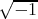 = i, but x3∕2 = e(3∕2) log x = e(3∕2)πi = −i.
= 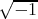 = i, but x3∕2 = e(3∕2) log x = e(3∕2)πi = −i.